绵阳科技城临港经济发展西区场站配套基础设施建设项目（二三期）
四川省建筑设计研究院有限公司
绵阳科技城临港经济发展西区｜站前配建项目
第一部分 / 场地分析
从绵阳市域逐级定位至项目红线
市域定位 → 周边关系 → 用地红线。右侧规划条件图同步核对用地边界与项目入口。
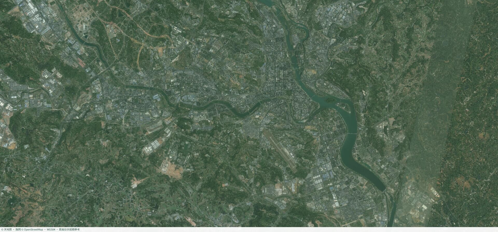
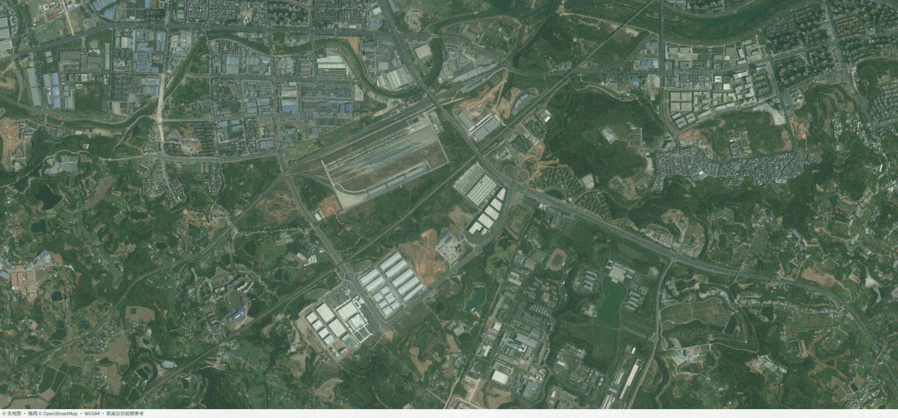
01｜绵阳市域点击图面进入项目周边
第一部分 / 场地分析
场地模型嵌入3公里城市背景
3公里城市背景＋项目地形｜道路线位于地形下方
纵七路｜城市道路铁岗大道｜快速路｜主入口铁路｜物流基地内部铁路
背景半径3公里；地图数据：OpenStreetMap；地形数据：Mapzen/AWS国际公开数据源；定位基准：卫星图与底图合图。
第一部分 / 场地分析
原始场地高程、坡度与剖面
拖动旋转，滚轮缩放。点选高程读取地面坐标、模型标高和坡度；剖面模式依次选择起点与终点生成地形剖面。
高程低高
坡度缓陡
原始场地模型已转换为Three.js WebGL网格。高程为模型标高，坐标系及高程基准待测绘资料确认。
高程结论
场地整体高差平缓，南北向物流组织优先利用现状坡向；最终竖向与排水以测绘资料复核。
场地整体高差平缓，南北向物流组织优先利用现状坡向；最终竖向与排水以测绘资料复核。
第二部分 / 规划条件分析
规划限制与本轮设计取值
规划条件取值与方案回应逐项对应。建筑密度和绿地率为本轮控制目标，后续结合总图实算复核。
规划控制设计对应
仓储容积率 1.0—3.0按下限1.0控制
配套设施容积率 1.5—2.5按下限1.5控制
建筑密度不低于50%按50%控制
建筑高度不超过35m单体高度控制在35m以内
绿地率5%—15%按5%控制
生活配套用地不超过总用地7%按7%做足，控制面积15,782.22㎡
生活配套建筑面积不超过总建筑面积15%（本轮按14.99%控制）（本轮按14.99%控制）（本轮按14.99%控制）（本轮按14.99%控制）按14.99%控制
仓储、工业建筑层高超过8m时双倍计容部分仓储采用8.1m层高并按双倍计容
本轮核算口径
本轮净建设用地225,460.29㎡（B地块扣减30亩），仓储与配套分别按93%和7%控制。铁岗大道主入口按总图位置表达，后续开展规划沟通和交通专项论证。
第三部分 / 方案展示
方案一SU体块模型与单体指标
拖动旋转，滚轮缩放。点击建筑体块查看编号、功能、层数、建筑面积和计容面积；坡道仅参与空间展示，不进入点击查询。
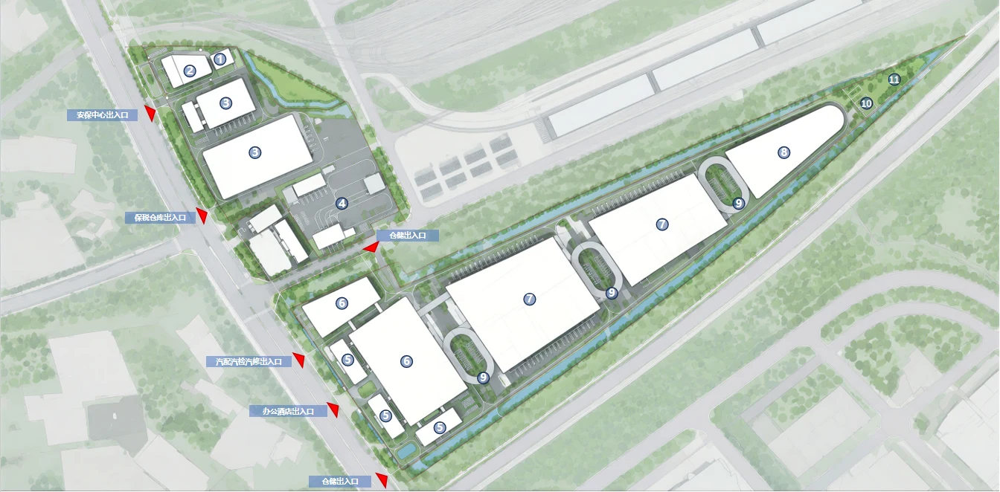
左键旋转 · 滚轮缩放 · 右键/Shift平移
W7｜冻库层数：1层
建筑面积：11,148.27㎡
计容面积：22,296.54㎡
数据来源：1007体量F1.skp。
建筑面积：11,148.27㎡
计容面积：22,296.54㎡
数据来源：1007体量F1.skp。
仓储配套办公档案室/金库酒店汽配汽修汽车美容交通连廊
铁路货运场站是区域物流背景铁岗大道承担城市展示与主入口关系建筑体量沿纵深组织仓储与立体物流
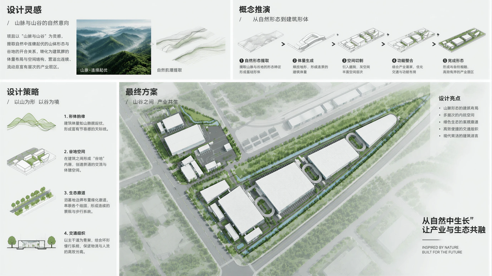
第三部分 / 方案展示
方案一功能总图落位
金库＋档案库独立成区保障私密性，保税仓库与一期海关监管紧邻，为二者合并管理提供条件；南侧用地临街展示面设置办公、酒店、汽配汽检汽修，最大化商业价值并利于城市形象；地块纵深部分设置仓储，末端设冻库及其配套。
功能01金库02档案库03保税仓库04一期海关监管05办公酒店06汽配汽检汽修07综合仓储08冻库09汽车坡道10充电站+换电站11露天光伏储能设施区域
0102030405060809090902030304050505060608
北区用地红线按总平面图复核；图示军供站为已建现状建筑，不计入本轮北区建设用地及新增指标。
北向 ↑城市主入口｜铁岗大道货运入口｜南区物流环线12m / 3%货车坡道
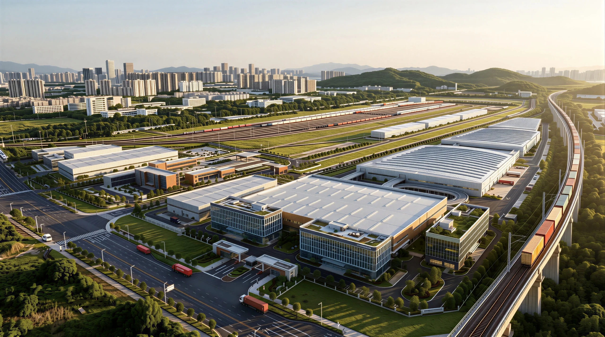
方案一｜方案一｜方案一｜方案一｜鸟瞰一｜城市入口、办公酒店与仓储组团
城市界面办公与倒班宿舍仓储组团
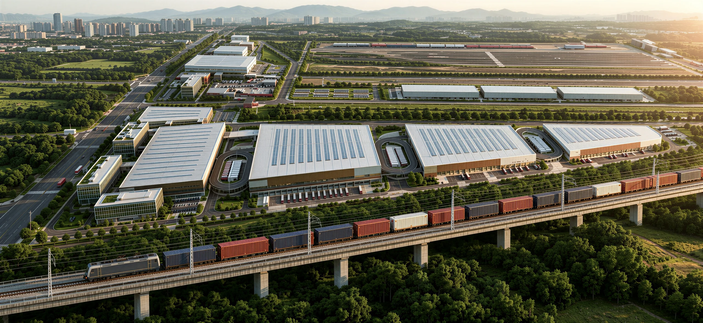
方案一｜方案一｜方案一｜方案一｜鸟瞰二｜铁路场站、仓储组团与南侧立体交通
铁路场站仓储组团南侧立体交通
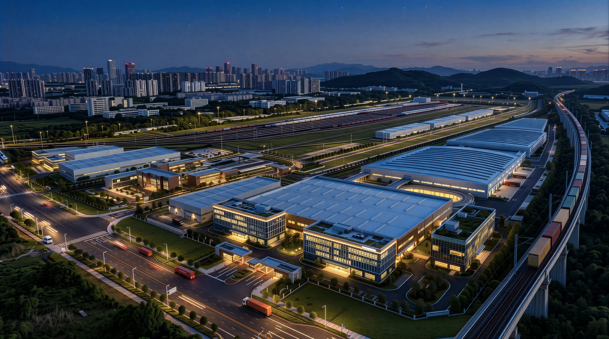
夜间运营道路照明建筑入口
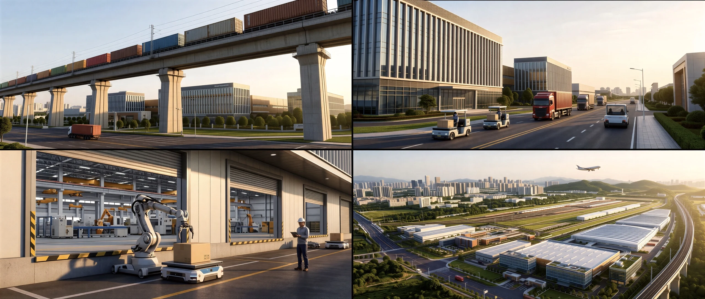
01｜到达城市入口与场站识别02｜组织货运、客运与人行分流03｜作业仓储、装卸与立体交通04｜运营能耗、物流与安全管理
第三部分 / 方案二
方案二设计推演
场地分析、体块组织与建筑细部，结合屋顶光伏和绿色物流预留。
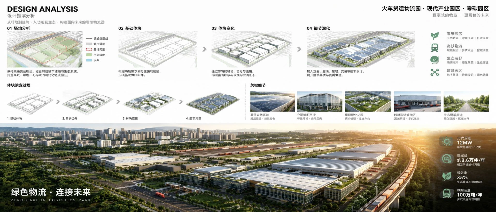
历史概念标注：图中性能数字仅用于设计推演，不作为本轮面积、投资或零碳核算依据。

方案二 / 功能组织
建筑体块与场地功能
方案二功能分区与场地色块表达。
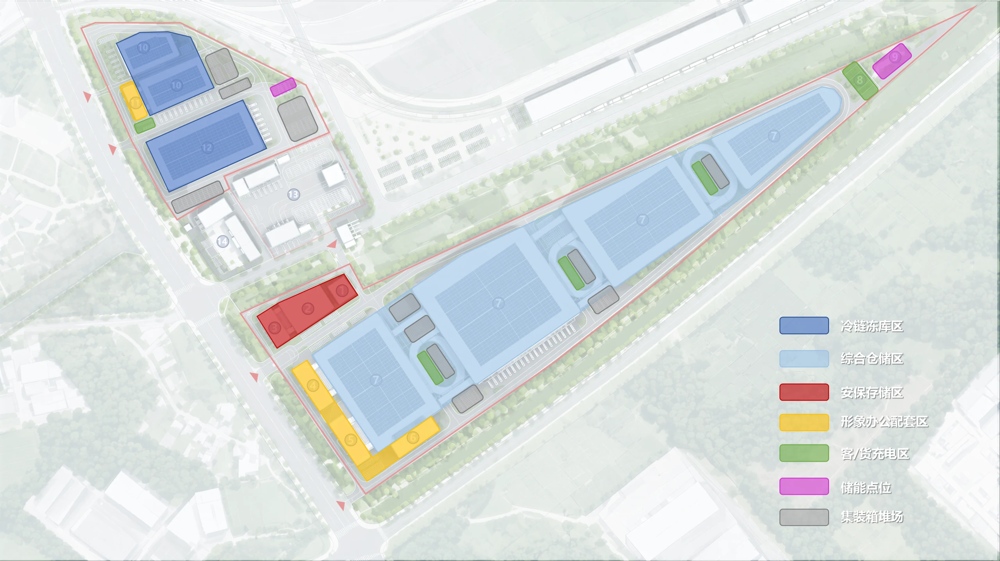
冷链冻库区：北区温控仓储与制冷能耗重点综合仓储区：南北连续货运与仓储组团办公配套区：沿城市界面形成展示与运营支撑
方案二 / 交通组织
园区内部交通与货运流线
方案二园区内部大环线、2层货运流线与专用无人设备作业通道表达。
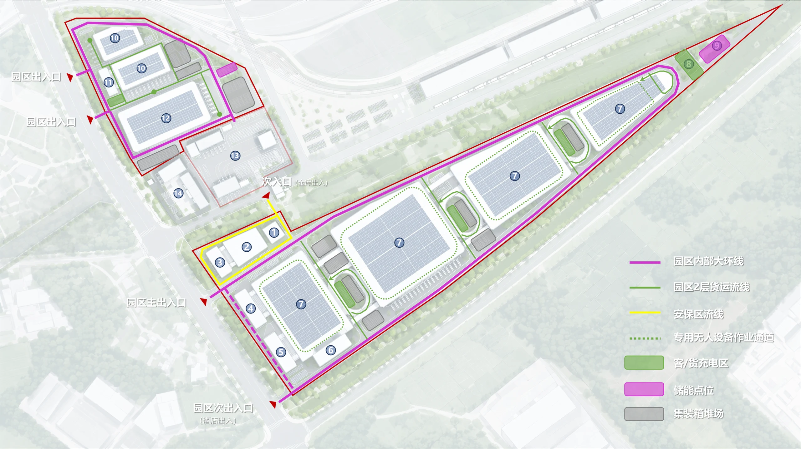
大环线：园区主通行与消防通行货运流线：坡道接入2—4层库房安保流线：金库、档案与安保独立受控无人路径：AGV连续作业，客货分流
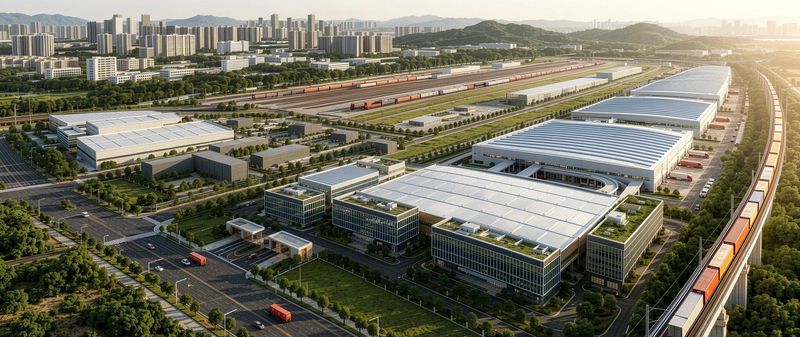
方案二｜城市入口与仓储组团
城市入口与仓储组团关系
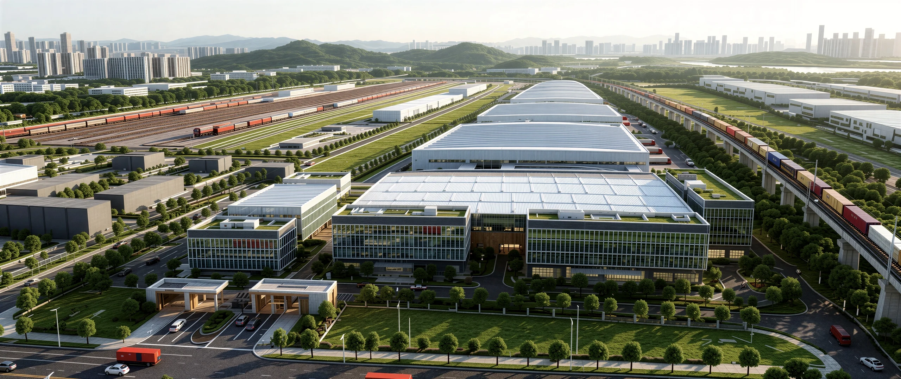
方案二｜正面半鸟瞰
城市界面立面连续性首层入口
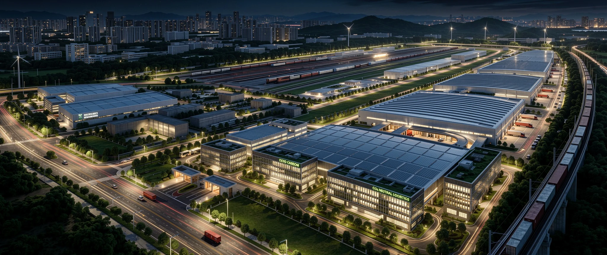
方案二｜夜景鸟瞰
夜间运营道路照明建筑入口
第三部分 / 方案二
方案二SU体块模型与单体指标
1012体量F1原模型，左键旋转、滚轮缩放，右键或Shift平移。点击建筑查询，编号对应新PPT功能标注。
已载入 1012体量F1.skp · 左键旋转 · 滚轮缩放 · 右键/Shift平移
点击任意建筑体块设计建筑面积按总图基底及标注层数推算，配套沿用0.8系数。该值与综合指标台账为不同口径；现状背景建筑未提供层数和面积台账，查询中如实标注待核。
仓储体块以2层为主，部分双倍计容需单独核算办公、安保与倒班宿舍沿城市界面布置冻库与充换电设施形成能源和物流耦合节点模型查询值与报规台账保持口径区分
专项深化 / 高安全运营
高安全等级仓储与资产保管中心
以“分区分流、内外有别”为组织原则，将档案、贵重物品、重要单证及特殊寄存物品纳入可识别、可管控、可追溯的保管体系。
3级安全空间
3类运营流线
24h安保与监控响应
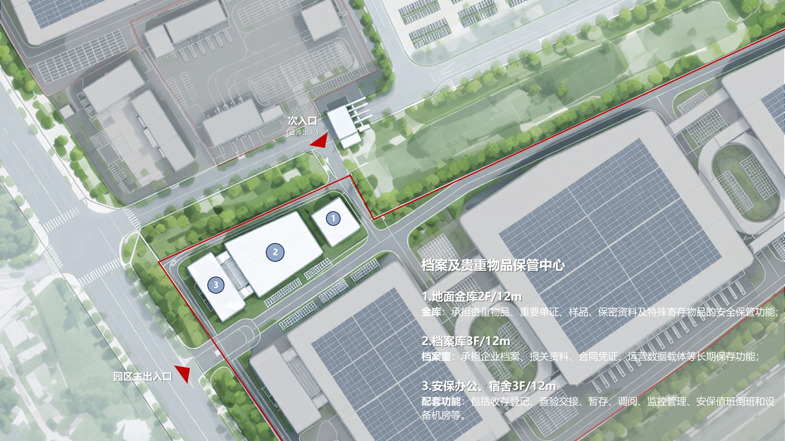
总平面｜建筑功能、场地功能与出入口本专篇为方案深化意向，空间边界、设备系统及防护等级以专项设计和审查成果为准。
专项深化 / 高安全运营
总平面：形成独立、可控的保管中心组团
以总平面和功能色块同步表达入口、建筑用途与运营分区；原页面功能分区说明整合至本页。
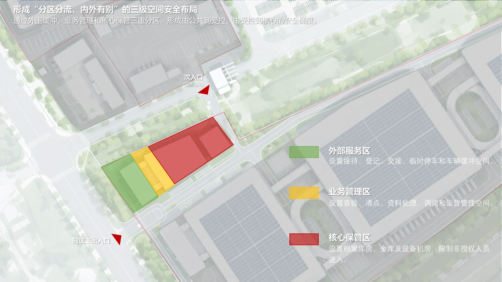
外部服务区接待、登记、交接与临时停车业务管理区查验、清点、资料处理与调阅核心保管区档案库房、地面金库与设备机房
专项深化 / 高安全运营
三类流线分开组织，关键节点集中管控
上传PPT第三页保留原有流线、箭头和门点标注，作为本页交通组织依据。
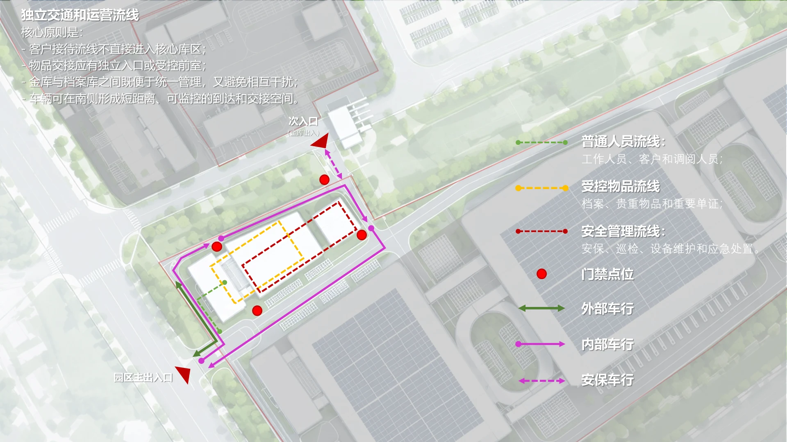
普通人员流线｜接待、登记与办公受控货物流线｜查验、清点与交接安全管理流线｜门禁、监控与核心保管
专项深化 / 高安全运营
从到达、核验到保管：可感知的高安全运营
用连续的场景意向呈现接待、调阅、核心保管和高安防库区四个关键运营瞬间，支撑空间策略向可执行的服务流程转译。
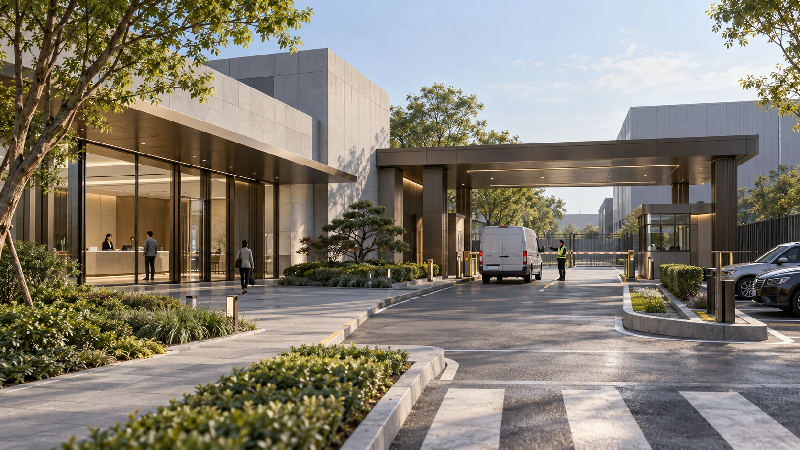
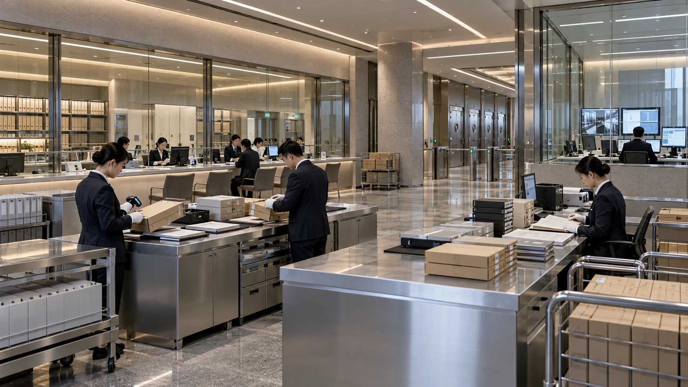
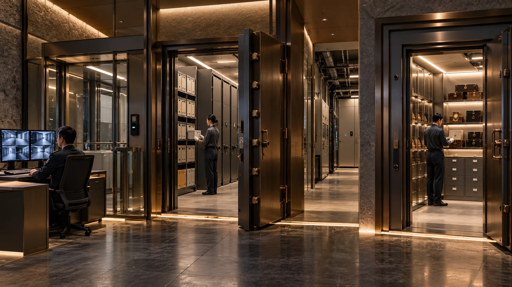
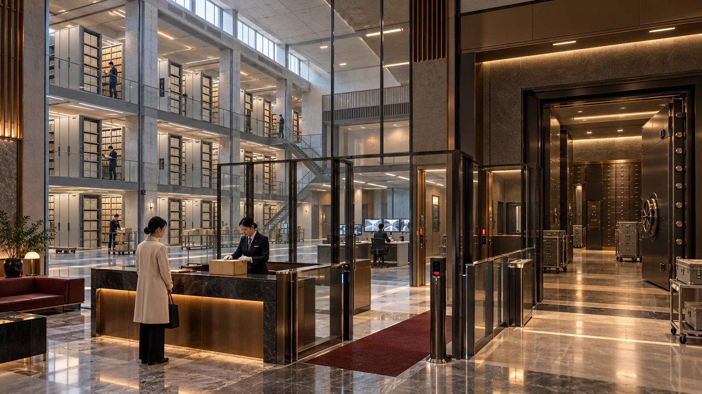
效果图为运营场景意向示意，用于表达空间氛围和工作流程；具体防护等级、设备选型及工艺参数以专项设计为准。
到达核验交接保管
第四部分 / 指标与投资
综合经济技术指标
南侧B＋北侧ACD（含已建海关监管中心）｜整体、分区、双倍计容及建筑明细
| 整体指标 | 数值 | 单位 | 备注 |
|---|---|---|---|
| 用地面积 | 225,460.29 | ㎡ | |
| 建筑基底面积 | 114,470.71 | ㎡ | |
| 总建筑面积 | 235,475.26 | ㎡ | 实际建筑面积 |
| 计容建筑面积 | 286,986.95 | ㎡ | 含双倍计容部分 |
| 容积率 | 1.26 | 计容建筑面积／用地面积 | |
| 建筑密度 | 50.16 | % | 建筑基底面积／用地面积 |
| 绿地面积 | 11,729.30 | ㎡ | 新增建设用地按5%设计控制；已建海关采用原指标 |
| 绿地率 | 5.14 | % | 设计控制值 |
| 生活配套建筑面积 | 34,435.57 | ㎡ | 已包含在总建筑面积内 |
| 生活配套建筑面积占比 | 14.62 | % | 按实际建筑面积统计 |
| 生活配套用地控制上限 | 15,782.22 | ㎡ | 总用地7%；非实测配套用地面积 |
报规报建功能面积
| 报规报建功能 | 建筑面积（㎡） | 计容面积（㎡） | 备注 |
|---|---|---|---|
| 普通仓储 | 159,294.70 | 170,739.41 | 含二次改造：汽配汽修汽检、汽车美容、地面金库、档案馆；07-4双倍计容 |
| 保税仓储 | 23,042.29 | 46,084.58 | 双倍计容 |
| 冻库 | 16,858.52 | 33,717.04 | 冻库1、冻库2；双倍计容 |
| 配套办公及倒班宿舍 | 23,207.45 | 23,207.45 | |
| 配套倒班宿舍 | 8,466.29 | 8,466.29 | 二次改造酒店 |
| 已建海关监管中心 | 4,606.00 | 4,772.18 | 其中生活配套2,761.83㎡；监管仓库含双倍计容部分 |
| 合计 | 235,475.26 | 286,986.95 |
北侧ACD用地75,155.39㎡已包含海关监管中心19,583.79㎡。新增建筑按方案二面积统计；海关中心采用已建综合技术经济指标。报建功能按仓储及配套分类，二次改造业态不另加面积。
南侧B地块
| 指标 | 数值 | 单位 | 备注 |
|---|---|---|---|
| 用地面积 | 153,072.63 | ㎡ | |
| 建筑基底面积 | 90,008.42 | ㎡ | |
| 总建筑面积 | 187,572.18 | ㎡ | 实际建筑面积 |
| 计容建筑面积 | 199,016.88 | ㎡ | 含双倍计容部分 |
| 容积率 | 1.30 | 计容建筑面积／用地面积 | |
| 建筑密度 | 58.80 | % | 建筑基底面积／用地面积 |
| 绿地面积 | 7,653.63 | ㎡ | 新增建设用地按5%设计控制；已建海关采用原指标 |
| 绿地率 | 5.00 | % | 设计控制值 |
| 生活配套建筑面积 | 28,277.47 | ㎡ | 已包含在总建筑面积内 |
| 生活配套建筑面积占比 | 15.08 | % | 按实际建筑面积统计 |
| 生活配套用地控制上限 | 10,715.08 | ㎡ | 总用地7%；非实测配套用地面积 |
| 功能 | 建筑面积（㎡） | 计容面积（㎡） | 备注 |
|---|---|---|---|
| 普通仓储 | 159,294.70 | 170,739.41 | 含二次改造：汽配汽修汽检、汽车美容、地面金库、档案馆；07-4双倍计容 |
| 配套办公及倒班宿舍 | 19,811.18 | 19,811.18 | |
| 配套倒班宿舍 | 8,466.29 | 8,466.29 | 二次改造酒店 |
北侧ACD地块（含海关中心）
| 指标 | 数值 | 单位 | 备注 |
|---|---|---|---|
| 用地面积 | 75,155.39 | ㎡ | |
| 建筑基底面积 | 24,462.29 | ㎡ | |
| 总建筑面积 | 47,903.08 | ㎡ | 实际建筑面积 |
| 计容建筑面积 | 87,970.07 | ㎡ | 含双倍计容部分 |
| 容积率 | 1.17 | 计容建筑面积／用地面积 | |
| 建筑密度 | 32.55 | % | 建筑基底面积／用地面积 |
| 绿地面积 | 4,075.67 | ㎡ | 新增建设用地按5%设计控制；已建海关采用原指标 |
| 绿地率 | 5.42 | % | 设计控制值 |
| 生活配套建筑面积 | 6,158.10 | ㎡ | 已包含在总建筑面积内 |
| 生活配套建筑面积占比 | 12.86 | % | 按实际建筑面积统计 |
| 生活配套用地控制上限 | 5,260.88 | ㎡ | 总用地7%；非实测配套用地面积 |
| 功能 | 建筑面积（㎡） | 计容面积（㎡） | 备注 |
|---|---|---|---|
| 保税仓储 | 23,042.29 | 46,084.58 | 双倍计容 |
| 冻库 | 16,858.52 | 33,717.04 | 冻库1、冻库2；双倍计容 |
| 配套办公及倒班宿舍 | 3,396.27 | 3,396.27 | |
| 已建海关监管中心 | 4,606.00 | 4,772.18 | 含生活配套2,761.83㎡；详见海关中心子表 |
北侧ACD：新增建设用地55,571.60㎡＋海关中心19,583.79㎡；新增建筑43,297.08㎡＋海关中心4,606.00㎡。
已建海关监管中心（北侧ACD子项）
| 指标 | 数值 | 单位 | 备注 |
|---|---|---|---|
| 用地面积 | 19,583.79 | ㎡ | 北侧ACD内已建用地 |
| 建筑基底面积 | 3,662.82 | ㎡ | |
| 总建筑面积 | 4,606.00 | ㎡ | 实际建筑面积 |
| 计容建筑面积 | 4,772.18 | ㎡ | 含双倍计容部分 |
| 容积率 | 0.24 | 计容建筑面积／用地面积 | |
| 建筑密度 | 18.70 | % | 建筑基底面积／用地面积 |
| 绿地面积 | 1,297.09 | ㎡ | 已建指标 |
| 绿地率 | 6.62 | % | 已建指标 |
| 生活配套建筑面积 | 2,761.83 | ㎡ | 已包含在总建筑面积内 |
| 生活配套建筑面积占比 | 59.96 | % | 按实际建筑面积统计 |
| 生活配套用地面积 | 1,137.30 | ㎡ | 已建指标 |
| 地上建筑面积 | 4,021.96 | ㎡ | |
| 地下建筑面积 | 584.04 | ㎡ | 设备用房，不计容 |
| 生活配套用地占比 | 5.81 | % | 海关中心用地口径 |
| 配套设施建筑容积率 | 2.43 | 海关原指标 |
海关中心为北侧ACD的已建子项，不与北侧ACD重复求和。生活配套建筑2,761.83㎡为原指标中的功能分类子项，不与建筑单体面积相加。新增生活配套用地按总用地7%控制，独立用地边界以报建总图核量为准。
| 所属地块 | 模型编号／功能 | 实际建筑面积（㎡） | 计容方式 | 计容面积（㎡） | 增计面积（㎡） |
|---|---|---|---|---|---|
| 北侧ACD | 12-南／保税仓库 | 23,042.29 | ×2 | 46,084.58 | 23,042.29 |
| 北侧ACD | 12-北／冻库2 | 9,652.42 | ×2 | 19,304.84 | 9,652.42 |
| 北侧ACD | 10／冻库1 | 7,206.10 | ×2 | 14,412.20 | 7,206.10 |
| 南侧B | 07-4／综合仓储 | 11,444.70 | ×2 | 22,889.41 | 11,444.70 |
| 新增建筑小计 | 51,345.51 | 102,691.03 | 51,345.51 | ||
| 北侧ACD·海关中心 | E1a／监管仓库 | 2,160.71 | 部分×2 | 2,957.13 | 796.42 |
| 合计 | 53,506.22 | 105,648.16 | 52,141.93 |
双倍计容增加的面积仅计入计容建筑面积，不增加实际建筑面积及工程计价面积。海关监管仓库按已建指标：建筑面积2,160.71㎡、计容面积2,957.13㎡，增计796.42㎡；海关其他单体按原核定计容值统计。
| 所属地块 | 方案二模型编号 | 功能 | 层数 | 建筑面积（㎡） | 计容面积（㎡） | 备注 |
|---|---|---|---|---|---|---|
| 南侧B | 04 | 配套办公（国际网络货运中心） | 5 | 8,466.29 | 8,466.29 | |
| 南侧B | 05 | 配套办公（多式联运中心） | 5 | 8,466.29 | 8,466.29 | |
| 南侧B | 06 | 配套酒店 | 5 | 8,466.29 | 8,466.29 | |
| 南侧B | 03 | 安保办公、宿舍 | 3 | 2,878.59 | 2,878.59 | |
| 南侧B | 07-1 | 综合仓储（汽修汽检汽配汽车美容） | 2 | 35,428.75 | 35,428.75 | 仓储；二次改造：汽修汽检汽配汽车美容 |
| 南侧B | 02 | 档案馆 | 3 | 8,835.10 | 8,835.10 | 仓储；二次改造：档案馆 |
| 南侧B | 01 | 地面金库 | 2 | 1,655.55 | 1,655.55 | 仓储；二次改造：地面金库 |
| 南侧B | 07-2 | 综合仓储 | 2 | 58,370.25 | 58,370.25 | |
| 南侧B | 07-3 | 综合仓储 | 2 | 43,560.35 | 43,560.35 | |
| 南侧B | 07-4 | 综合仓储 | 1 | 11,444.70 | 22,889.41 | 双倍计容 |
| 北侧ACD | 11 | 配套办公（中欧班列国际集装箱运营中心） | 5 | 3,396.27 | 3,396.27 | |
| 北侧ACD | 12-南 | 保税仓库 | 2 | 23,042.29 | 46,084.58 | 双倍计容 |
| 北侧ACD | 12-北 | 冻库2 | 2 | 9,652.42 | 19,304.84 | 双倍计容 |
| 北侧ACD | 10 | 冻库1 | 2 | 7,206.10 | 14,412.20 | 双倍计容 |
| 新增建筑合计 | 230,869.26 | 282,214.77 | ||||
| 北侧ACD·海关中心 | E1a | 监管仓库 | — | 2,160.71 | 2,957.13 | 部分双倍计容 |
| 北侧ACD·海关中心 | E1e | 卡口1、卡口2 | — | 1,713.83 | 1,670.25 | 海关原指标合计 |
| 北侧ACD·海关中心 | E1d | 设备用房（地上及地下） | — | 731.46 | 144.80 | 地上147.42㎡；地下584.04㎡ |
| 海关中心合计 | 4,606.00 | 4,772.18 | 其中生活配套2,761.83㎡，不另加 | |||
| 全园合计 | 235,475.26 | 286,986.95 |
建筑编号使用方案二网页SU模型的体块标识：12-南为保税仓库，12-北为冻库2，10为冻库1。E1e为两处卡口合并统计；海关生活配套面积采用原指标分类，不再作为独立单体重复累计。面积显示保留两位小数，合计按未取整值计算。
零碳园区专项 / 01 建设目标
零碳园区建设目标与国家要求
南侧B＋北侧ACD统一设计｜225,460.29㎡，约22.55公顷
国家政策定义（概述）
通过规划、技术和运营管理系统减碳，使园区生产生活的CO₂排放接近零，并为进一步实现净零创造条件；不是仅安装光伏。国家发展改革委政策解读 ↗
核心指标｜单位能耗碳排放
≤0.2吨CO₂/吨标准煤
年综合能耗20—100万吨标准煤
年综合能耗20—100万吨标准煤
≤0.3吨CO₂/吨标准煤
年综合能耗≥100万吨标准煤
年综合能耗≥100万吨标准煤
达不到核心要求，原则上不得申请验收；该口径仅核算CO₂。
五项引导指标｜验收参考
- 清洁能源消费占比 ≥90%
- 产品单位能耗达到或优于二级能耗限额
- 工业固废综合利用率 ≥80%
- 余热／余冷／余压综合利用率 ≥50%
- 工业用水重复利用率 ≥80%
确不具备实施条件的指标，须按文件说明原因。
本项目｜南北整体设计、分区核算
南北用地共225,460.29㎡，北侧ACD已包含海关用地19,583.79㎡。新建建筑230,869.26㎡与已建海关4,606.00㎡统一纳入能源核算；已建主体不重复计费，节能改造纳入专项。铁路货场不计入本轮边界。
国家级主体资格与管理责任需另行论证，不把本建设项目直接等同于可申报主体。
本轮为运行用电方案情景，尚未完成综合能耗与全口径排放核算，不能直接套用政策档位或认定达标。
依据：发改环资〔2025〕910号（2025-06-30） · 附件3：指标体系（试行）。本页为政策摘要，正式申报以主管部门适用要求为准。
零碳园区专项 / 02 边界与路径
从系统边界到全生命周期减排
零碳园区不是单项光伏工程，而是能源、建筑、交通、生产、生态和管理的协同系统。
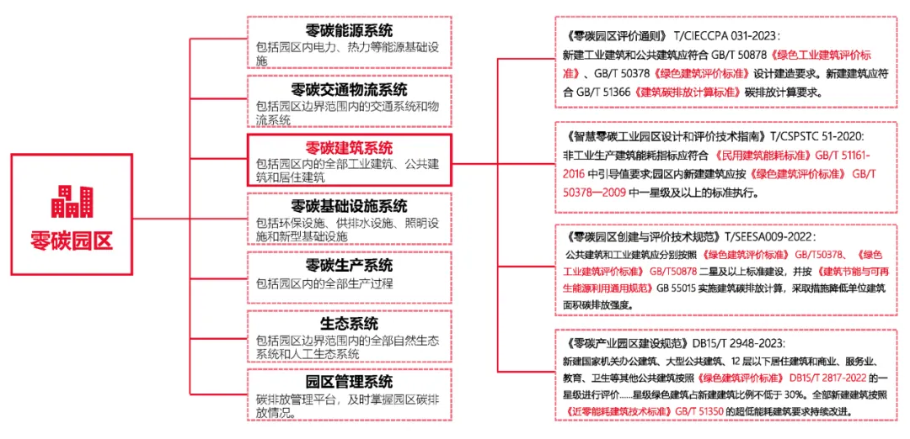
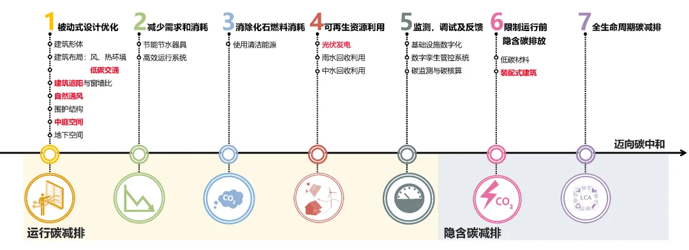
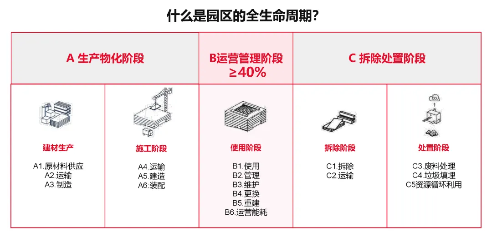
本项目的核查逻辑明确南北地块边界 → 分区计量建筑、冷库、光伏、储能与交通 → 先降需求、再替代能源 → 用数字孪生持续监测 → 按适用标准形成年度核查资料。
01｜边界与基线02｜分区计量03｜降耗与能源替代04｜年度核查与复盘
零碳园区专项 / 03 国内参照案例
国内实践：建设规模与投资口径
以物流园运营减碳为主案例，对照园区能源专项及屋顶光伏工程；不将案例认证等同于国家级验收。
京东西安“亚洲一号”
- 建设时间
- 2019年投用；2022年3月公布碳中和认证。
- 规模
- 园区约30万㎡；屋顶光伏10万㎡、装机9MW。
- 投资
- 引用资料未披露零碳专项投资，不据装机容量反推金额。
借鉴：屋顶光伏、设备与物流效率提升、用能电气化及运营核算。历史认证使用CCER抵消剩余排放，不直接套用国家级验收。
南京智慧康养创新园
- 建设时间
- 2023年8月22日能源项目签约；所引公告未给出竣工时间。
- 规模
- 园区建筑约20.45万㎡；前期23栋厂房、约4万㎡屋顶光伏。
- 投资
- 园区总投资约12.69亿元；绿色综合能源计划近1亿元，前期计划4,000余万元。
借鉴：光伏、储能、充电与能效平台系统统筹。金额为2023年披露计划，非已完成投资，也非本项目报价。
天津远程工厂屋顶光伏
- 建设时间
- 2023年8月开工、历时5个月；2024年1月公告已并网。
- 规模
- 屋顶约7万㎡；装机6.754MW。
- 投资
- 光伏项目总投资2,640万元，不是整个近零碳园区建设费用。
服务天津经开区智能无人装备产业园近零碳建设。借鉴：利用存量屋顶先实施可计量的绿电项目。
案例投资须统一范围；本项目按南北地块整体能源负荷、可用屋顶与分期建设测算，不直接套用案例规模或认证结论。
零碳园区专项 / 04 既有案例
设计院已有案例：数字孪生进入实际运营
以既有项目证明平台构建、三维模型、设备接入和运营服务能力；案例用于说明能力边界，不等同于本项目已建成。
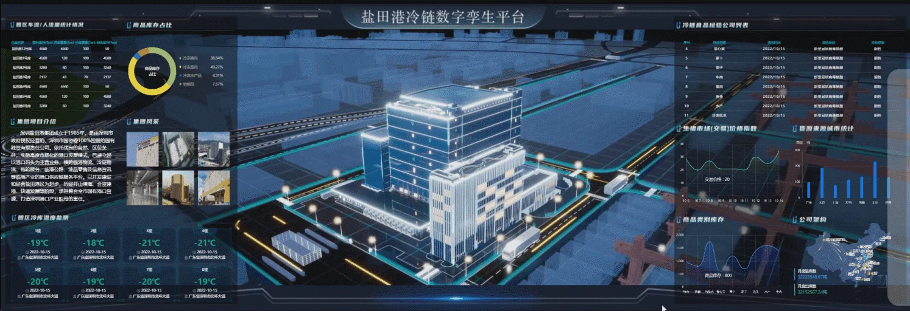
盐田港冷链数字孪生平台以仓储、温度、库存、车辆、物流和运营指标为对象，形成冷链场景的三维可视化与运营监测。
冷链建模车辆与库存运营监测
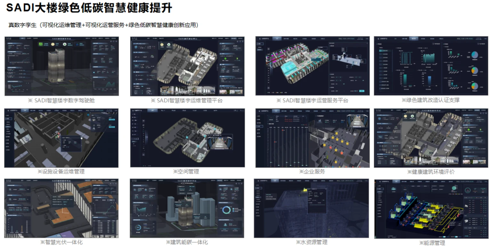
SADI 大楼绿色低碳智慧健康提升覆盖数字驾驶舱、运维管理、空间管理、设备管理、健康建筑评价、智慧光伏和能源管理。
数字孪生设备运维能源管理
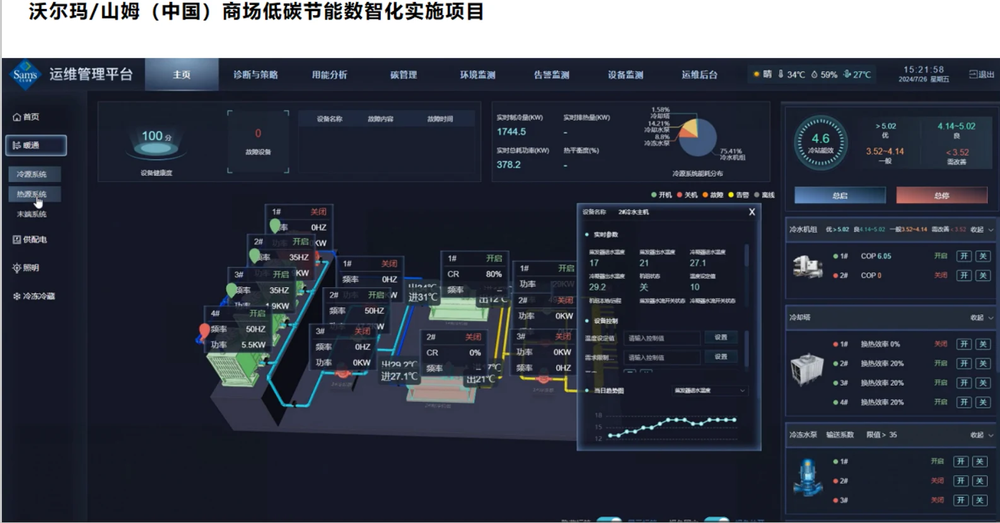
沃尔玛／山姆商场低碳节能数智化实施面向冷机、冷却塔、水泵等设备，接入功率、温度、COP、故障和运行趋势，支持低碳运维。
冷机诊断COP趋势低碳反馈
案例形成的可迁移能力：建筑与能源建模 → 设备和计量接入 → 运营状态可视化 → 节能策略反馈 → 形成可核查的运营数据。
零碳园区专项 / 05 本项目措施
光伏建筑一体化＋重卡换电
把可建、可维护、可计量的光伏界面，与南区绿色物流和重卡换电接口结合，形成可分期实施的能源与交通减排组合。
01
建筑集成光伏 BIPV
屋顶、幕墙、雨棚和楼板边界按建筑场景选型
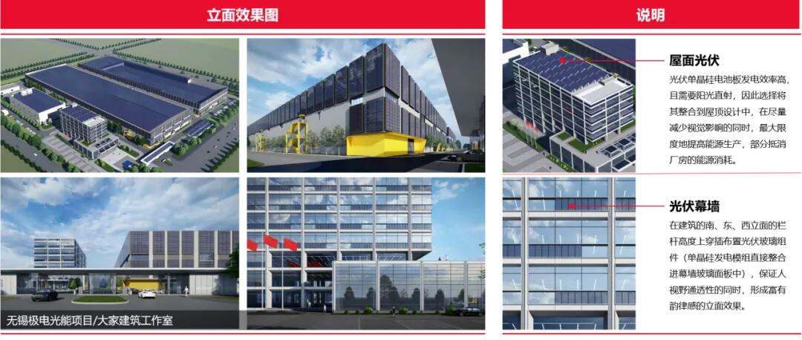
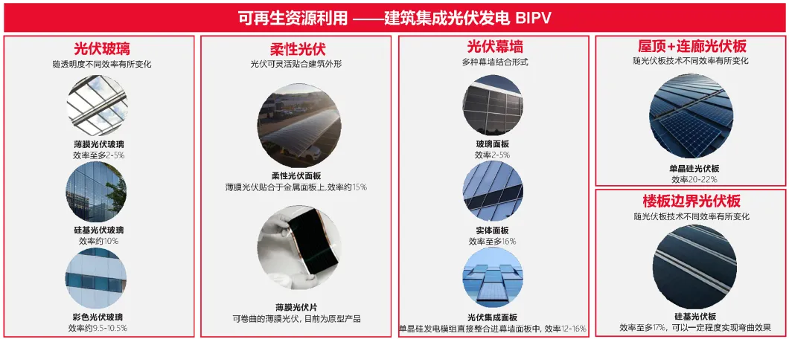
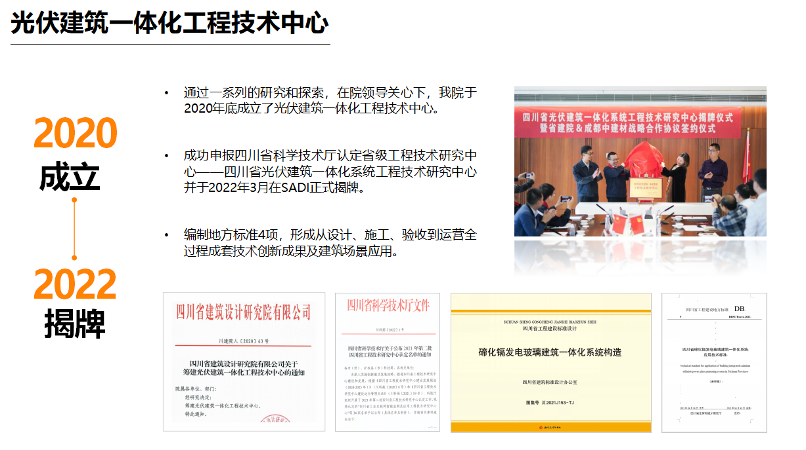
- 优先利用南北适宜屋顶，复核荷载、遮挡、消防和检修空间。
- 根据建筑界面选择光伏玻璃、柔性光伏、光伏幕墙及屋顶组件。
- 装机容量以逐屋面排布、接入条件和逐时消纳校核为准。
02
绿色物流与重卡换电
把换电站作为南区物流车辆的低碳交通接口
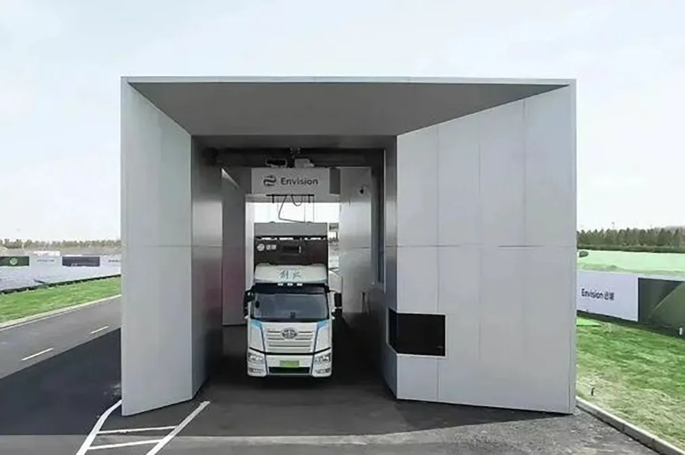
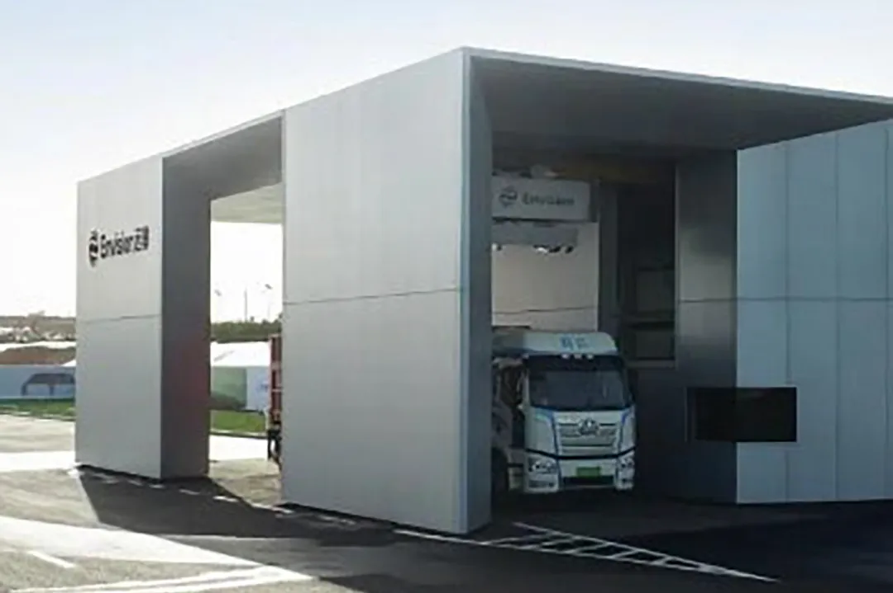
- 南区一期保留 2 座换电站接口，与 50 枪充电设施统筹论证。
- 换电站位置需校核重卡转弯、排队、消防、配电和运营边界。
- 园内短倒和物流调度纳入数字平台，园外运输减排单列核算。
实施组合建筑节能 → BIPV 绿电 → 储能与负荷协同 → 重卡换电与充电 → 能碳平台核查
零碳园区专项 / 06 策略与核查
南北统筹：先降耗，再供绿电，持续核算
南侧B＋北侧ACD用地225,460.29㎡；全园建筑（含已建海关）235,475.26㎡，其中北区冻库16,858.52㎡。南北整体规划、分区计量、分类控制、统一管理。
统一边界与分区基线
南北地块统一建账，按仓储、冻库、办公酒店、汽车服务及海关中心分别计量。已建海关监管中心4,606.00㎡纳入北区能源及改造统计；铁路货场不在本轮园区核算边界。
南北屋顶光伏＋绿电补充
仓储屋面暂按80%、冻库60%、配套50%可铺比例，预扣设备、消防及检修空间；全园约19.22MWp，900小时情景年发电1,729.57万kWh。
北区冻库与全园建筑节能
两栋冻库优化门区、冷桥和高效制冷控制；余热回收、蓄冷列为深化选项。全园LED、分区控制与设备变频，制冷剂泄漏管理另列。
储能与持续用能协同
2MW/4MWh保留为待校核起始方案。依据冻库24小时运行、光伏出力与充电曲线确定容量及分布；不得用年发电量替代逐时匹配。
南区绿色物流与充换电
南区一期共50枪＋2座换电预留，服务全园物流车辆；电动叉车、装卸预约和短倒组织协同，园外运输减排单列。
统一平台与年度核查
共用能碳平台，暂列48个重点计量回路；南北分区、海关中心、冻库制冷及发电独立计量。以实际能源账单、绿电凭证及适用排放因子核查。
建设路径：南北统一设计 → 分区分期实施 → 实测能源平衡 → 绿电补足与年度核查。当前为方案测算，不能据此认定已达到零碳。
主线：先降耗 → 供绿电 → 持续核算；策略四项落地，核查两项闭环。
零碳园区专项 / 07 总图落位
南北地块零碳实施措施
零碳园区范围按方案二总平面图南北地块用地红线表达；军供站为已建现状建筑，不纳入园区范围；设施编号为布置意向，非施工定位。

绿色：南侧B；蓝色：北侧ACD，均纳入整体设计。分区线须以总图复核。橙色编号为措施意向；海关中心为北区已建子项，纳入能耗及节能改造；已建主体不重复计费。铁路货场不计入。
- 01｜南北可利用屋顶光伏南北及海关屋顶分别建账，合计铺板约87,351.99㎡、装机19.22MWp；冻库屋顶预扣制冷设备及消防检修占用。
- 02｜北区两栋冻库节能冻库1、冻库2合计建筑面积16,858.52㎡；制冷变频、门区及分区控制。余热回收、蓄冷适用性待专项评估。
- 03｜全园储能待核方案暂保留2MW/4MWh，意向位置需校核配电、消防和检修；以两区逐时负荷确定最终规模。
- 04｜南区充换电设施南区一期布置50枪及2座换电预留；统一服务全园物流车辆，北区不重复建设充换电设施。
- 05｜全园绿色物流组织南北装卸预约、电动叉车及短倒统筹；跨边界运输单列，铁路货场本体不在本轮专项工程费用内。
- 06｜南北配套建筑节能办公、安保宿舍及倒班宿舍（酒店二次改造）合计31,673.74㎡；照明、空调控制及分项计量，常规装修机电留在建安费。
- 07｜北区能碳平台北区红线内布置能碳管理节点，接入北区用能与发电；军供站为已建现状建筑，不纳入零碳园区范围。
第四部分 / 指标与投资
南北地块工程费用估算对比
南北两区共用面积与零碳专项，两套按钮仅切换建筑计价口径；冻库常规保温制冷与零碳节能增量分列。
汇报结论 / 下一步
构建面向铁路物流的城市型综合园区
城市界面
铁岗大道是唯一城市道路界面，也是园区主要形象展示面，园区主入口均开在此路，但铁岗大道属于快速路，后期开口需与规划与交管部门沟通，可能需要做交评论证；
专业运营
北侧ACD地块按方案二总图布置03保税仓库、08冻库及04一期海关监管中心；南侧B地块布置07综合仓储、05办公与倒班宿舍、06汽配汽检汽修，并配置10充换电站与11光伏储能。
物流效率
• 多式联运：顺应现代物流协同发展趋势，强化公路与铁路运输衔接，构建高效便捷的物流体系，实现货车到点卸货、AGV自动接驳、货物配送到架。
• 智能化运营：规划应用自动化立体仓库、AGV机器人及智能仓储管理系统，实现入库、存储、分拣、出库全流程协同，预计出入库效率较传统人工模式提升200%。
下一步工作
规划沟通、交通专项、面积指标与工程费用同步复核。
四川省建筑设计研究院有限公司
南北零碳整体设计：光伏约19.22MWp，专项约11,039.06万元；冻库高效制冷增量单列，统一能碳平台。下一步复核面积、逐时消纳、配电容量及绿电采购，形成可核查的零碳建设路径。
汇报结束 / 下一步
从总图到实施
把每一项假设变成可核查的工程条件
四川省建筑设计研究院有限公司 · 绵阳科技城临港经济发展西区站前配建项目